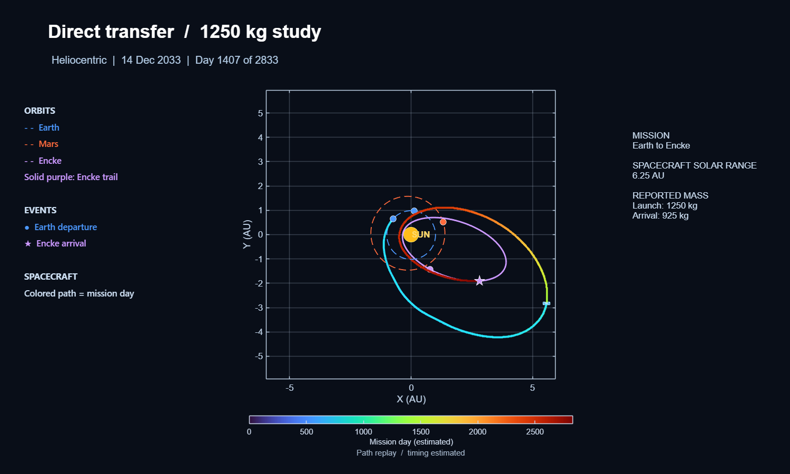
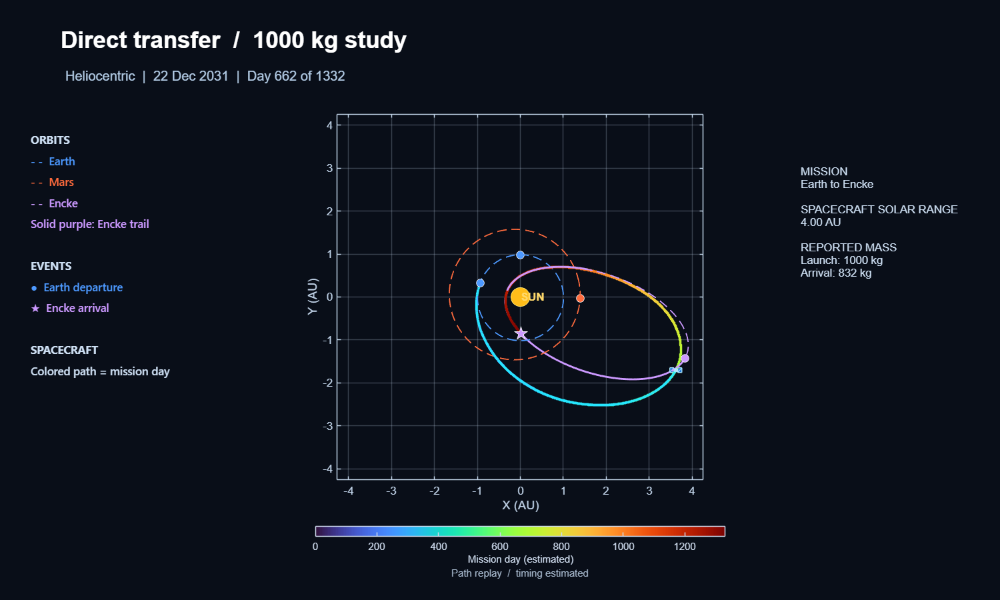
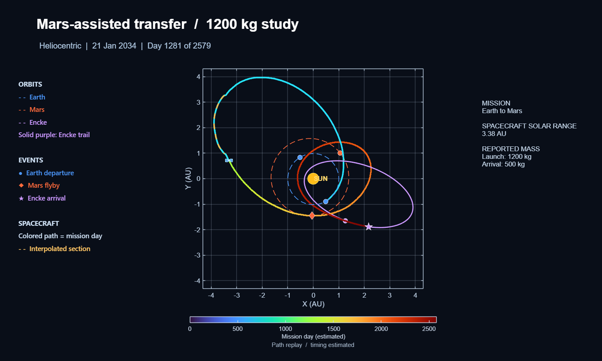
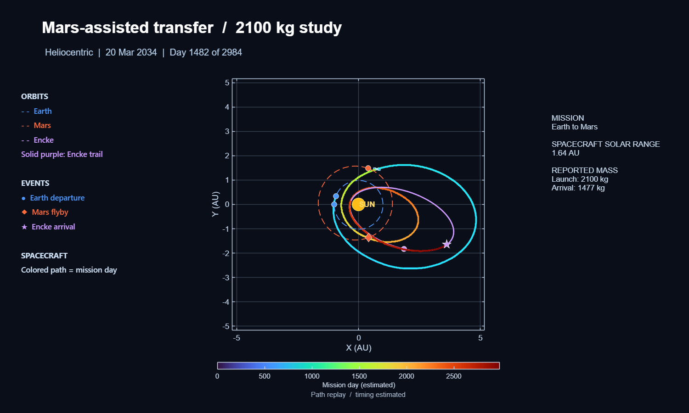
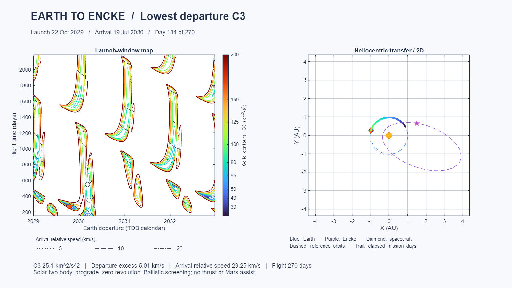
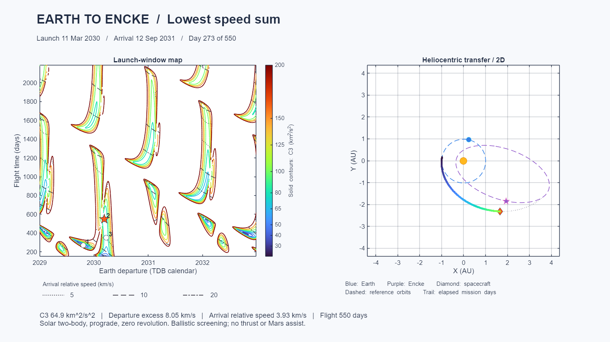
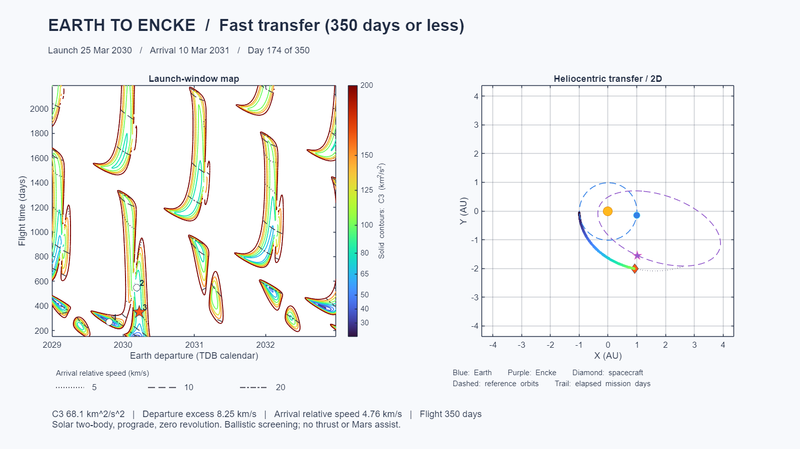

Direct route A

Comet routes &
launch-window tradeoffs.
CAPCOM (Close Approach Primary Cometary Outburst Mapper) is a team mission concept for close-range observation of comet 2P/Encke and its outbursts. The study compared a direct low-thrust transfer with a Mars-assisted route, balancing flight time against propellant demand and launch-vehicle escape capability. The launch-window comparison below uses a separate Lambert model.
Choose from two direct and two Mars-assisted CAPCOM route studies, each with heliocentric and angled views. Earth and Mars reference tracks use DE405/SPICE; Encke uses JPL Horizons.




This separate study uses solar two-body, prograde, zero-revolution Lambert transfers with Earth and Encke states from NASA JPL Horizons. Three selected cases emphasize departure energy, the sum of departure excess speed and arrival relative speed, or shorter flight time.
The contour map locates each selected departure date and flight time; the adjacent replay follows its propagated spacecraft path in physical time. The speed sum is a screening score. Numbers shown are outputs retained from the supplied study.


